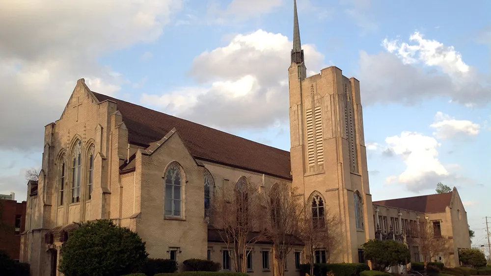

First Christian Church Feasibility Study
Jackson, Mississippi
A feasibility study was initiated for a church congregation to purchase the church and renovate it as their new facility. Extensive improvements are planning, including structural alterations, restoration of the sanctuary interior, and renovations to the fellowship hall, classrooms, and support spaces.
Area: 26,000 gsf
